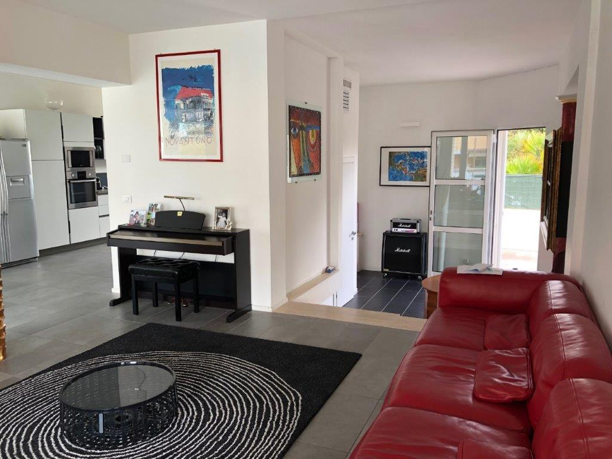
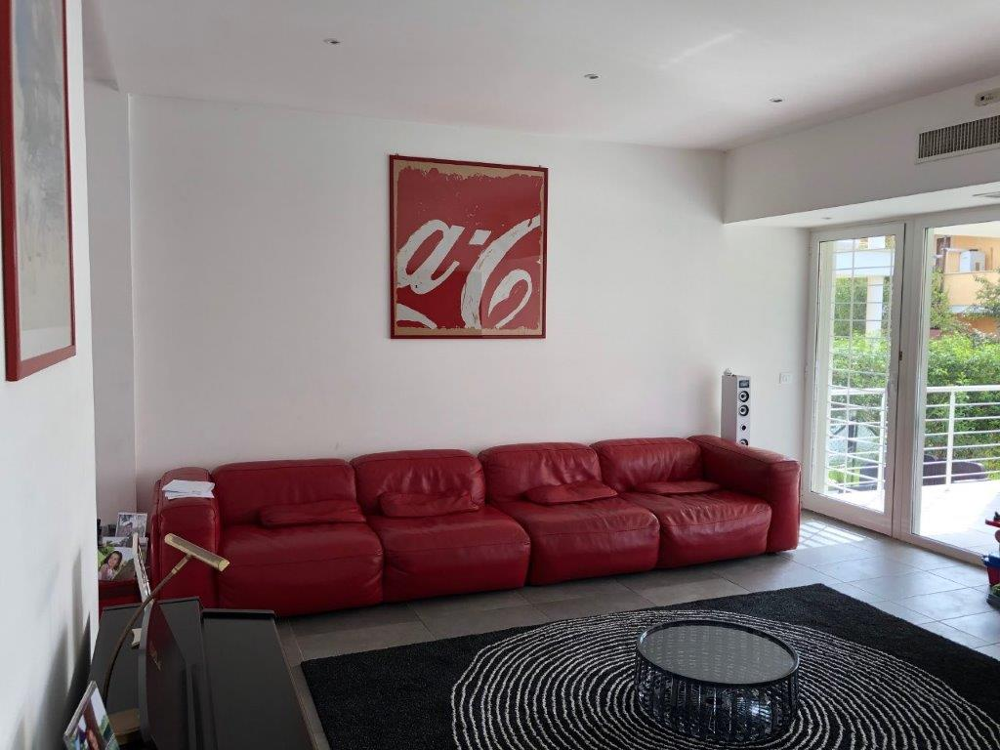
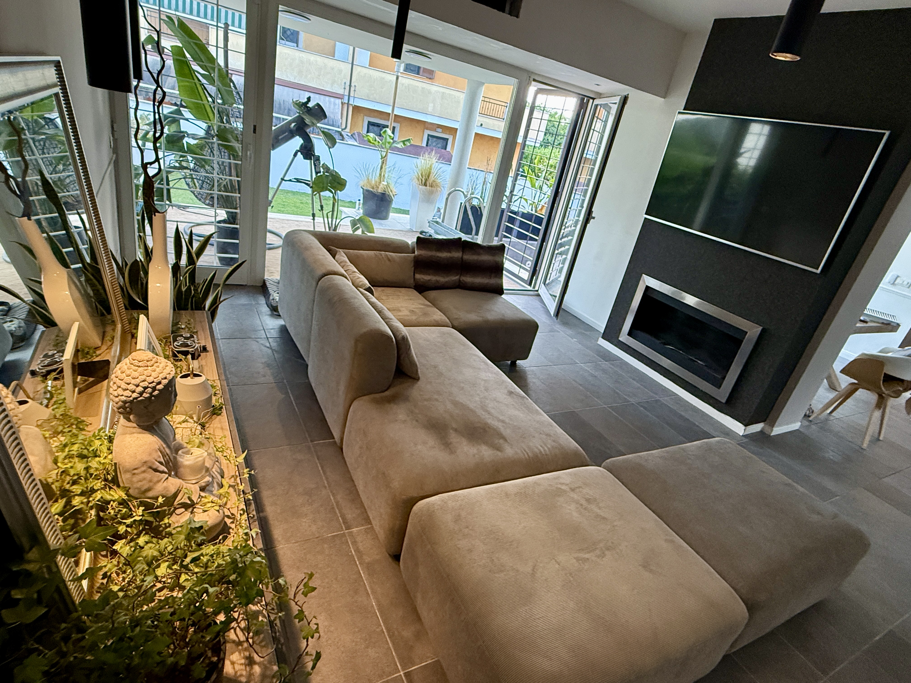

Living Frame
Restyling living residenziale | Roma
Da spazio freddo a living materico e personale.
Il living nasceva come uno spazio moderno, ma ormai poco attuale: freddo, dispersivo e privo di una reale identità.
Il progetto ha ridefinito completamente il modo di vivere la zona giorno. Una parte dell’ingresso, molto ampia e poco sfruttata, è stata chiusa per ricavare una nuova stanza da letto, mentre il salone è stato ripensato come ambiente più raccolto, materico e accogliente.
La grande vetrata, già elemento centrale della casa, è diventata il punto di forza del progetto: la luce naturale dialoga con texture morbide, tonalità neutre, superfici scure e una presenza importante del verde.
Il risultato è un living contemporaneo, caldo e personale, dove elementi classici, materia e suggestioni tropicali convivono in equilibrio.
Prima


Dopo
